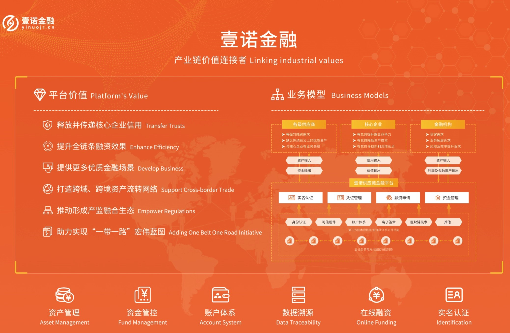

壹诺金融：缓解中小企业融资难 区块链技术让资产流动起来
在传统金融业务体系下，供应商与供应商之间的约定结算无法自动完成，多级回款的控制难度较大；信任只能在核心企业与一级供应商间传递，其他环节供应商缺乏背书较难融资；尤其是，中小企业融资需求强烈，但难以证明自身偿还能力，很难得到资金方的认可。
WeShare（北京）网络技术有限公司（以下简称“WeShare科技”）基于其区块链底层技术，自主开发并运营的“区块链+供应链”金融科技服务平台——“壹诺金融”，将传统贸易过程中的赊购赊销行为转换为一种可拆分、可流转、可持有到期、可融资的线上电子凭证，让数字资产流动起来，并且实现了在供应链金融业务领域的降本增效。在本届智博会上，WeShare科技将携包括“壹诺金融”在内的多款区块链产品亮相。

赊购赊销也能变可流转电子凭证
WeShare科技现拥有数十项核心专利技术，WeShare链目前已经广泛应用于数字资产、供应链金融、供应链溯源、股权债券、公示公证、多方数据安全共享等领域。
其中，“壹诺金融”是基于WeShare链底层技术，自主开发并运营的“区块链+供应链”金融科技服务平台。该平台依托产业链条中真实贸易背景及核心企业付款承诺，创造性地将区块链不可篡改、多方共享、智能合约等技术特性与供应链金融场景深度结合，将传统贸易过程中的赊购赊销行为转换为一种可拆分、可流转、可持有到期、可融资的线上电子凭证。在传递核心企业信用的同时，缓解传统业务场景下信息不对称、信任成本高及资金跨级流转风险大等问题。
“通过打造‘供应链+区块链=产业链’的生态网络，助力实体经济快速健康发展。”壹诺金融COO商洪武告诉记者，在传统金融业务场景中，各金融机构、企业间难以建设统一ERP系统，各环节业务信息分散保存在各参与方处，极易形成信息孤岛。供应商与供应商之间的约定结算无法自动完成，多级回款的控制难度较大，信用无法有效传递。供应链条中的中小企业融资需求强烈，难以证明自身偿还能力，很难得到资金方的认可，支付结算不能自动化完成，“这些痛点都可以通过区块链技术来解决。”
应付账款凭证能够为供应商融资
那么，壹诺金融的区块链解决方案是如何运作的呢？
商洪武介绍，这实际上是一个多方参与、共建共享的业务撮合平台，参与者主要包括资产端、资金端、信用端三方。资金端主要由银行、信托、小贷公司等金融机构构成，同时还引入了保理公司；资产端是中小企业，在产业链上处于弱势，因缺少优质信任背书而较难获得经营所需的低成本资金，有强烈融资需求；信用端是给整个业务过程做信用保障的，主要由产业龙头的核心企业构成，这些企业规模较大，处于产业链条的中心位置，拥有银行授信，其行业结算特点是赊销，一般存在3~6个月的付款账期，有意愿通过自身信用覆盖，为其产业链条内供应商解决融资难、融资贵问题。
“壹诺供应链金融平台采用反向邀请的方式，以核心企业为邀请源头，将存在直接或间接贸易关系的上下游供应商逐级邀请进来，在平台上搭建自己的价值流转网络。在业务场景方面，核心企业基于真实贸易背景下的债务关系去登记应付账款凭证，并转移给对应的一级供应商。一级供应商再基于自己和二级供应商的关系，去完成应付账款凭证的拆分和流转。对于中小企业而言，只需要拿到平台上接收到的核心企业的应付账款凭证碎片，找到平台上的资金方，就能快速获得融资。”商洪武介绍。
核心企业“大佬”们为何愿意参与到这个平台，帮助供应链条上的中小企业获得融资？商洪武解释，对核心企业而言，因为原本就需要按照应付账款给供应商付款，所以这个线上化的过程不新增成本和风险，但又能因此产生多方面的收益。比如，供应商融资成本的降低最终又会反作用为原材料或中间产品生产成本的降低，并最终降低核心企业的整体生产成本。
商洪武介绍，壹诺金融使用区块链技术在金融机构、企业间搭建了一个“多中心化”的网络。尤其是，作为一个多方参与的业务撮合平台，盘活了核心企业信用，缓解了中小企业融资难题。
- 上一篇：没有了
- 下一篇：壹诺金融：战略布局物联网，打造“互联互通、互信互助”的价值生态